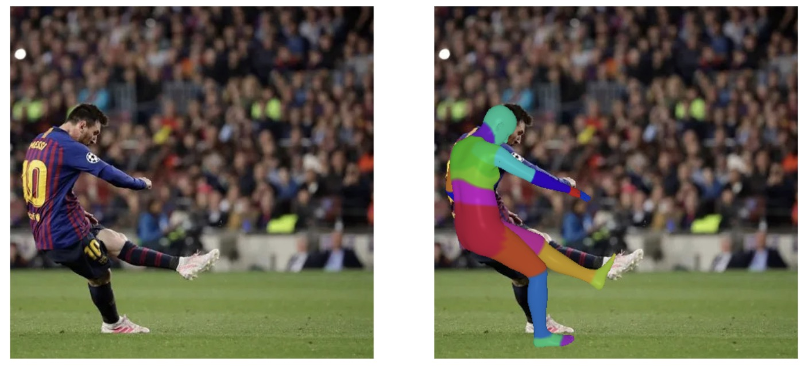
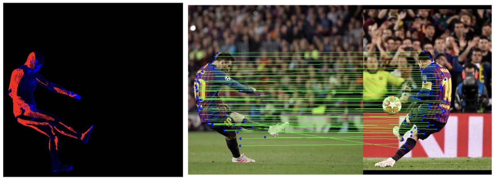

Virtual Correspondences
Implementation of "Virtual Correspondence: Humans as a Cue for Extreme-View Geometry" (Ma et al., CVPR 2022).
Results
Below are comparisons of SuperGlue on three image pairs each taken by two cameras at the same instant from roughly opposite sides of the person. With little to no overlap between views, SuperGlue finds matches mostly in the background, and most of them are wrong. Virtual correspondences give a dense set of matches on the person. Because the predicted SMPL meshes aren't perfect, some correspondences are noisy and fall off the body, but RANSAC rejects them as outliers when estimating the pose. These results estimate the 3D body with CameraHMR rather than PARE, which the paper uses (see Implementation).
Background
Classic correspondence methods (SIFT, SuperGlue, etc.) need image overlap in order to match features: regions with similar appearance are considered matches and are thought to view the same point in 3D. With extreme viewpoint changes, such as one camera behind a person and one in front, there is little or nothing to match.
Ma et al. introduce virtual correspondences: pairs of pixels whose camera rays intersect in 3D, even if they image different surface points and look nothing alike. Formally, pixels p1 and p2 are virtual correspondences if there exist depths d1, d2 such that
rp1(d1) = rp2(d2), where rp(d) = RT(d K−1p − t) and K, R, t are the intrinsic and extrinsic parameters of the camera
To find such pairs without knowing the camera poses, the paper uses humans as a shape prior. It recovers a 3D body mesh (SMPL, via PARE) in one image and dense body-surface coordinates (DensePose) in the other. A ray through a pixel on someone's back in one view exits through their front, allowing for a match to a pixel on their stomach in the other view. These correspondences can then be used to estimate the essential-matrix which can be decomposed into the relative R, t between the cameras. Furthermore, instead of triangulating correspondences, this approach uses each ray's first intersection with the estimated body mesh as its 3D point for bundle adjustment.
Implementation
We followed the paper's overall pipeline. For clarity, here is the two-view, one-person case; the same steps extend to more people (with the additional constraint of Re-ID) and more views.
- Estimate the SMPL body parameters of the person in image 1.
- Compute the DensePose mapping of the same person in image 2. This gives IUV coordinates for every pixel on the person: I is the body part, and U, V are coordinates on that part's surface chart.
- Map each IUV coordinate from image 2 to an XYZ point on the SMPL mesh estimated from image 1.
- Project those XYZ points into image 1. Each projected point and its source pixel in image 2 form a correspondence.
- Estimate the essential matrix with the 5-point algorithm and RANSAC, and decompose it into a relative rotation and translation.
- Refine that pose with bundle adjustment.


Limitations
As the paper notes, the method depends heavily on the predicted shape prior: if the object's shape is unknown or estimated badly, it can't produce virtual correspondences.
References
- Wei-Chiu Ma et al. "Virtual Correspondence: Humans as a Cue for Extreme-View Geometry." CVPR 2022.
- Muhammed Kocabas et al. "PARE: Part Attention Regressor for 3D Human Body Estimation." 2021.
- Priyanka Patel and Michael J. Black. "CameraHMR: Aligning People with Perspective." 3DV 2025.
- Rıza Alp Güler, Natalia Neverova, and Iasonas Kokkinos. "DensePose: Dense Human Pose Estimation in the Wild." 2018.
- Federica Bogo et al. "Keep it SMPL: Automatic Estimation of 3D Human Pose and Shape from a Single Image." 2016.
- MMHuman3D Contributors. "OpenMMLab 3D Human Parametric Model Toolbox and Benchmark." 2021.
- Paul-Edouard Sarlin et al. "SuperGlue: Learning Feature Matching with Graph Neural Networks." CVPR 2020.